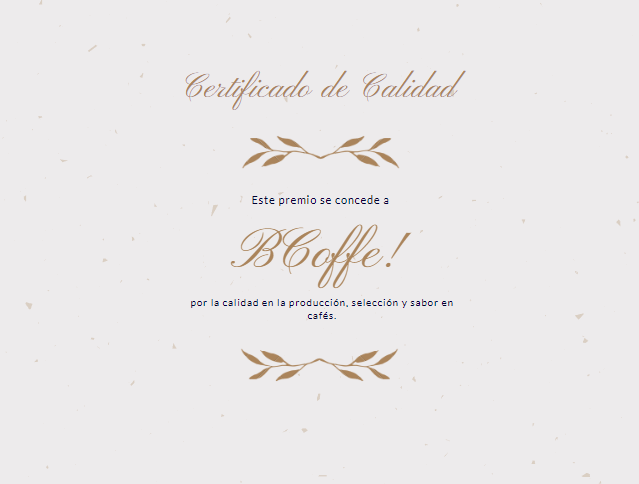

BCoffe! es una cafetería que ofrece los mejores cafés del mundo. Si buscás un lugar para tomar café en serio, esta es tu cafetería. Además, contamos con certificado de calidad en la producción, selección y sabor de nuestros cafés.
Nosotros contamos con nuestras plantaciones de café, seleccionando cada grano manualmente para así garantizar la calidad que buscás. Además, contamos con variedad de cafés importados, para que puedas estar en muchos lugares a la vez, en un solo lugar.
Nos aseguramos que todo el proceso de plantación, selección, cosecha, procesamiento y tueste se tome en serio, para que cuando finalmente llegue a tu taza de café, lo puedas comprobar a un bajo precio.